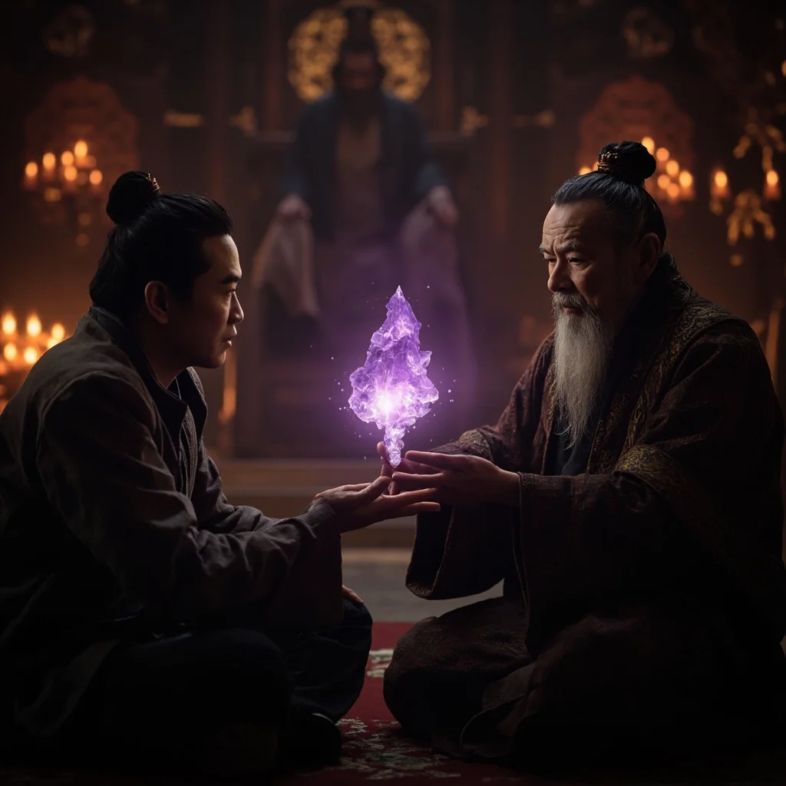

第31章：宇宙和平
🎧 點擊播放有聲朗讀
🎧 點擊播放有聲朗讀
混沌吞噬者被消滅後的第三天，紫霄世界迎來了一場久違的慶典。七大仙域的修士們穿上了節日的盛裝，街道上張燈結綵，歡歌笑語迴盪在每一個角落。這是數千年來，紫霄世界第一次真正意義上的和平。
林塵站在紫霄仙域最高的「天璇塔」頂層，俯瞰著下方熱鬧的景象。微風拂過他的臉龐，帶來遠處鮮花的芬芳。青陽端着靈茶走來，與林塵分享著戰後的感悟。林塵感慨這段時間經歷的一切，徹底改變了他對修真的理解。

碧瑤帶來了好消息——混沌吞噬者的黑暗殘餘正在被自然清除，各個受損世界即將完全恢復。赤焰感慨萬分，坦言從未想過會與不同仙域的人並肩作戰，更沒想到會與一個外來者成為生死之交。眾人相視而笑，溫暖的友情在空氣中流淌。
紫玄真人與林塵進行了一場私下的重要談話。得知林塵決心繼續旅程，紫玄真人將紫霄世界的「世界之鑰」——一枚散發淡紫色光芒的珍貴晶石——交到林塵手中。這是紫霄世界所有修士的決定，林塵是他們的恩人，這枚世界之鑰理應由他守護。
一個月後，林塵在紫霄仙域中央廣場與所有人告別。他已從元嬰期突破到化神期，擁有了更強大的力量。紫玄真人代表所有人送上祝福，林塵啟動多元通行令，金色光芒將他包圍，通往未知世界的通道打開。林塵微笑揮手，踏上了守護多元宇宙的新征程。